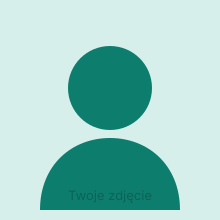

O mnie

Zajmuję się kartografią i analizami przestrzennymi. Zamieniam surowe dane geograficzne w czytelne, estetyczne mapy — zarówno interaktywne, jak i przygotowane do druku.
Ten akapit zastąp własnym opisem: skąd jesteś, w czym się specjalizujesz (np. mapy tematyczne, teledetekcja, analizy sieciowe, dane OpenStreetMap), z jakich narzędzi korzystasz i co Cię w kartografii najbardziej fascynuje. Dodaj też informację, jak można się z Tobą skontaktować w sprawie współpracy.
Napisz do mnie na kontakt@example.com lub zajrzyj na mój GitHub.